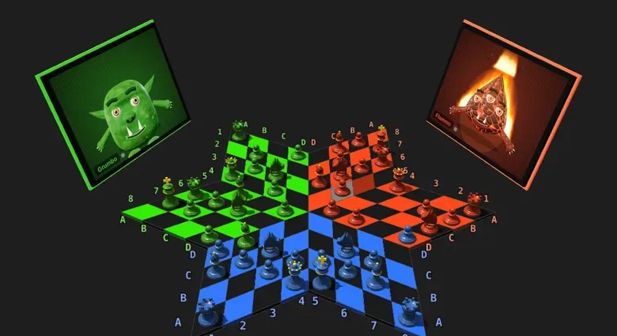
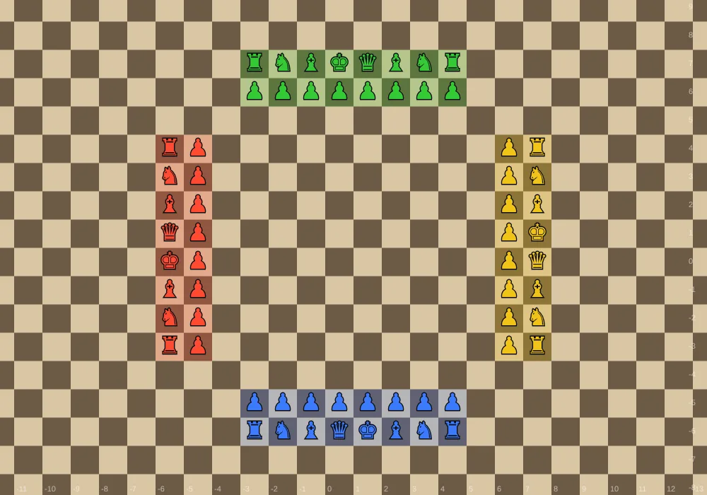
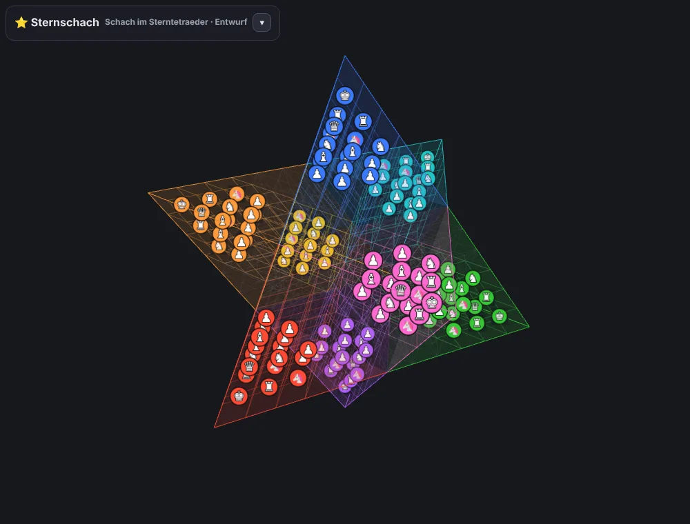
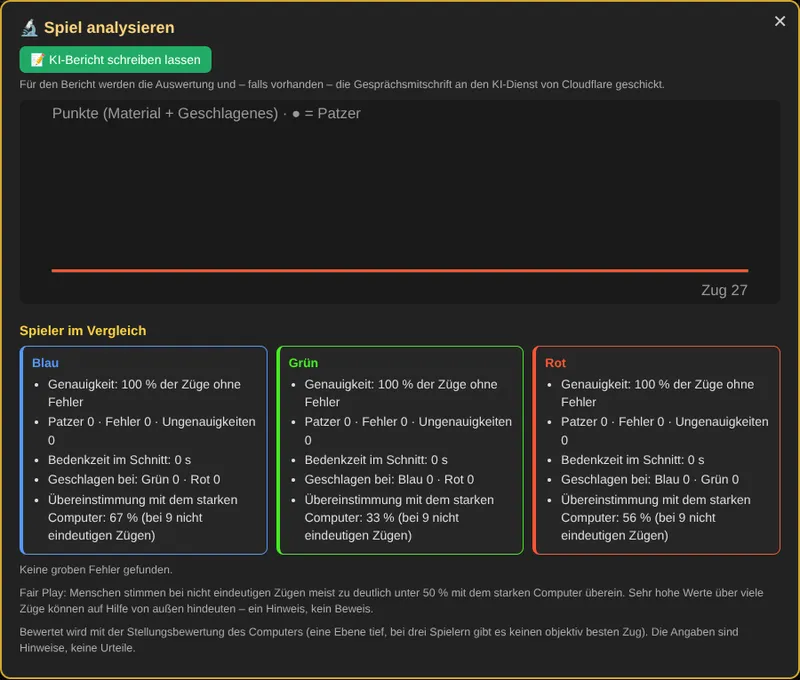

Drei-Personen-Schach
Drei-Personen-SchachSchach zu dritt – mit Bündnissen, Verrat und Hilfspflicht
Drei Spieler, ein sternförmiges Brett, drei Sektionen, die sich in der Mitte treffen. Wer hier gewinnen will, muss nicht nur rechnen, sondern auch verhandeln: Mit wem gehe ich gemeinsam gegen den Führenden vor – und wann ist es Zeit, das Bündnis zu brechen?
▶ Jetzt kostenlos spielenRegeln lesenLäuft direkt im Browser auf Handy, Tablet und Computer. Keine Anmeldung, keine Installation nötig.

Was ist Drei-Personen-Schach?
Drei-Personen-Schach überträgt das klassische Schach auf drei Spieler: Blau, Grün und Rot ziehen reihum, jeder mit den bekannten sechzehn Figuren. Das Brett besteht aus drei Sektionen zu je vier mal acht Feldern, die zu einem Stern zusammengesetzt sind. In der Mitte stoßen alle drei Sektionen aneinander – dort entscheidet sich fast jede Partie.
Weil drei Spieler am Brett sitzen, verändert sich das Spiel grundlegend. Wer früh zu stark wird, zieht die Angriffe beider Gegner auf sich. Wer abwartet, kann zum lachenden Dritten werden. Und eine besondere Regel, die Hilfspflicht, verhindert, dass ein Spieler einen anderen bequem ins Matt laufen lässt.
So kannst du spielen
🤖 Gegen den Computer
Acht Computergegner mit eigenem Charakter – vom verspielten Blubbo über den mürrischen Grumbo bis zum hitzköpfigen Flammo. Sie freuen sich, ärgern sich, schmieden Bündnisse – und verraten sie auch mal. Vier Spielstärken von leicht bis Meister.
🌐 Live mit Freunden
Einladungslink per WhatsApp, SMS oder QR-Code verschicken – und schon sitzt ihr zu dritt am Brett. Mit Kamera und Mikrofon, Chat, Emoji-Reaktionen und automatischer Übersetzung in zwölf Sprachen.
✉️ Fernpartie
Jeder zieht, wann er Zeit hat. Der Spielstand liegt sicher auf dem Server, wer dran ist, bekommt eine Benachrichtigung aufs Handy. Wer gerade gleichzeitig online ist, kann sich sehen und hören.
🔬 Analyse
Nach der Partie zeigt die Analyse Patzer, Wendepunkte und bessere Züge, eine Punktekurve und ein Verhaltensprofil jedes Spielers. Auf Wunsch schreibt eine KI einen Bericht über Verlauf und Psychologie der Partie.
♟ Analysebrett
Beliebige Stellungen aufbauen, Züge ausprobieren, Vorschläge des Computers ansehen und die Stellung per Link mit Freunden teilen – zum Beispiel, um einen strittigen Zug zu besprechen.
🎨 Für alle Augen
Spielerfarben frei wählbar mit Farbrad, zusätzliche Zeichen bei Farbsehschwäche, 2D- und 3D-Ansicht sowie 3D+ mit drei Würfeln als Spielbrett, Hoch- und Querformat am Handy.
Noch mehr Schach: drei weitere Varianten
Wer Lust auf mehr hat, findet hier drei eigene Spiele – mit denselben Computergegnern, Online-Partien, Fernpartien und Auswertungen wie im Drei-Personen-Schach.

👑 Schach der 6 Reiche
Schach im Würfel aus 8 × 8 × 8 Feldern für 2 bis 6 Spieler, mit Einhorn, Nachtreiter und Amazone.

♾️ Schach ohne Grenzen
Ganz normales Schach – nur hat das Brett keinen Rand. Zu zweit wie gewohnt, zu dritt oder zu viert wie an einem Tisch.

⭐ Sternschach
Schach im Sterntetraeder, dem räumlichen Davidstern: Bis zu acht Heere stehen in den Spitzen des Sterns und kämpfen sich durch die Mitte.

Warum zu dritt alles anders ist
Im klassischen Schach ist jeder Vorteil gut. Zu dritt kann ein Vorteil gefährlich werden: Wer Material gewinnt, wird zum Ziel. Erfahrene Spieler halten sich deshalb oft knapp hinter dem Führenden, schwächen beide Gegner gleichmäßig und schlagen erst zu, wenn die anderen sich gegenseitig zermürbt haben.
Dazu kommt die Mitte des Sterns: Türme, Damen und Läufer können über sie in die Nachbarsektionen wechseln, aus den mittleren Spalten sogar in beide. Eine Figur in der Mitte bedroht deshalb oft zwei Gegner gleichzeitig – und wird von beiden bedroht.
Computergegner mit Persönlichkeit
Die Computergegner sind mehr als Rechenmaschinen. Sie sprechen – auf Wunsch laut –, schlagen Bündnisse gegen den Führenden vor, nehmen Angebote an oder lehnen sie ab und vergessen nicht, wer ihnen zuletzt eine Figur genommen hat. Du kannst sie sogar direkt ansprechen: „Grumbo, was hältst du von Flammo?“
So entsteht genau die Mischung aus Rechnen und Verhandeln, die Drei-Personen-Schach ausmacht – auch wenn gerade keine Freunde zum Spielen da sind.
Aus jeder Partie lernen

Die Analyse vergleicht jeden Zug mit allen anderen möglichen Zügen der Stellung und markiert Patzer, Fehler und Ungenauigkeiten. Ein Klick auf einen Schlüsselmoment springt direkt in die Stellung, wo du eine bessere Fortsetzung ausprobieren kannst.
Besonders spannend wird es, wenn alle Mitspieler der Gesprächsmitschrift zugestimmt haben: Dann zeigt die Analyse, wer seine Ankündigungen wahr gemacht hat – und wer geblufft hat.
Häufige Fragen
Kostet das Spiel etwas?
Nein. Drei-Personen-Schach ist kostenlos und läuft ohne Anmeldung direkt im Browser.
Brauche ich drei Personen?
Nein. Freie Plätze übernehmen Computergegner – du kannst allein gegen zwei Computergegner spielen, zu zweit gegen eines oder zu dritt ohne Computer.
Kann ich das Spiel installieren?
Ja. Im Browser-Menü „Zum Startbildschirm hinzufügen“ wählen – dann startet Drei-Personen-Schach wie eine App, im Vollbild.
Was passiert mit Kamera und Mikrofon?
Bild und Ton gehen direkt an deine Mitspieler und werden nicht gespeichert. Mehr dazu in der Datenschutzerklärung.
Ich kenne normales Schach – worauf muss ich achten?
Die Figuren ziehen wie gewohnt; neu sind die Übergänge über die Mitte, die Umwandlung auf der Grundreihe einer fremden Sektion und die Hilfspflicht. Die Regeln erklären alles mit Beispielen, und die Strategie-Seite zeigt, wie man zu dritt denkt.